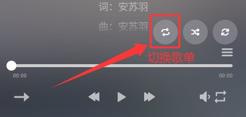

英语口语练习文章
.png)
英语口语练习文章
original_author👇🏻 👇🏻 👇🏻 👇🏻 👇🏻 👇🏻 👇🏻 👇🏻 👇🏻 👇🏻

👆🏻 👆🏻 👆🏻 👆🏻 👆🏻 👆🏻 👆🏻 👆🏻 👆🏻 👆🏻
链接打开后点击左边第一个悬浮按钮，进行切换歌单，切换后为文章对应的听力材料
PASSAGE 1
Success in Life
Success means different things for different people. Some may equate it with fame, some with wealth and still some with accomplishments.
For me, it means fulfilling one’s dreams. Whatever your dreams are, you have a goal there and then focus all your attention on it.
Dreams bring you hope and happiness. In the process of struggling for it, you cry, sweat, complain or even curse, but the joy of harvesting makes you forget all the pains and troubles you have gone through. So an old proverb says that the sweetest fruit is one that has undergone the bitterest ordeal.
There are several keys to success. First, your goal must be practical and practicable. If you set your goal too high, chances are that you will never attain it. Next, you have to make a plan of doing it. You can take some steps to realize it. Since the process is quite tough, you need to be diligent, patient and persevering.
Even if you meet with some difficulties or frustrations, just take them in your stride. You can always tell yourself that there is nothing insurmountable. With this will and determination, success is sure to wait for you at the end of the tunnel!
| Learning And Review |
|---|
| passage_1 |
PASSAGE 2
Learning：a Lifelong Career
As food is to the body, so is learning to the mind. Our bodies grow and muscles develop with the intake of food. Likewise, we should keep learning day by day to maintain our mental power and expand our intellectual capacity.
Constant learning supplies us with fuel for driving us to sharpen our power of reasoning, analysis, and judgement. Continuous learning is the best way to keep pace with the times in the information age.
It is a common misunderstanding to regard school as the only place for the acquisition of knowledge. On the contrary, learning should be an endless process, from the cradle to the grave. With the world changing so fast, to stop learning for just a few days will make a person lag behind.
Lack of learning will inevitably lead to the stagnation of the mind, or even worse, its fossilization. Therefore, to stay mentally young, we have to take learning as a lifelong career.
| Learning And Review |
|---|
| passage_2 |
| passage_1 |
PASSAGE 3
JOGGING
Every day, in all kinds of weather, thousands of men and women go jogging. Why has jogging—running slowly for long distances—become so popular? Most joggers like it because they have heard it is a very good exercise. Jogging makes the heart stronger and helps people lose weight. It can also help them feel better about themselves.
How fast should you go? Jog with a friend and talk to each other as you run. If you have difficulty talking, you are going too fast. How far should you jog? Remember not to go too far too soon. In fact you should walk, not run, the first few times. Then do some short jogs, but no more than what you can do comfortably.
After that, increase your distance a quarter or half of a mile every two weeks or so. Maybe in a few years, you, too, can run in a marathon like thousands of other people do.
| Learning And Review |
|---|
| passage_3 |
| passage_2 |
PASSAGE 4
Body Language
Americans feel that physical contact can be important in breaking down barriers between people. Such physical acts as hugging, shaking hands and kissing in public are seen as displays of affection.
In China, on the other hand, this is not common because physical contact is not the custom. Interestingly enough, most Chinese who spend some time in America come to like hugging; they learn that Americans use body language to express feelings. It is a way of saying “I like you and I care about you.”
Shaking hands is another traditional way of greeting someone in America. Shaking hands is a more formal way of greeting than hugging. Whereas hugging shows closeness, shaking hands means that there is a little more formality in the relationship.
Western people usually shake hands when meeting someone for the first time, or when they see someone again after a certain amount of time has passed. In Japan, people traditionally bow as a form of greeting. Other countries have different customs, like patting someone on the back or kissing.
| Learning And Review |
|---|
| passage_4 |
| passage_3 |
PASSAGE 5
Sleep
Scientists suggest that today, most adults get up to two hours’ less sleep than they need. As a result, those lacking in sleep are forgetful, tired, less productive and grumpy. Sleep is the time when our bodies and minds are rested and restored.
There are two types of sleep: Rapid Eye Movement and Non-REM. We need both types to be healthy. Rapid Eye Movement sleep is when we dream. Our brains are active, and our eyes have fast short movements, as if watching something. This type of sleep helps restore our mind.
Non-REM sleep is when our brain and body slow down. Our heart rate slows and our breathing is regular. This type of sleep helps restore our body. We have twice as much Non-REM sleep as Rapid Eye Movement sleep each night. To get better sleep, have a regular time for sleeping and a routine before you go to bed.
This will give your body the signal that it is time to sleep. Make sure the bed and bedroom are quiet and comfortable. If your bed is too hard or too soft, if you are too cold or too hot, you will not sleep well. For two hours before going to bed do not drink coffee or alcohol, or do not smoke or exercise. All these activities stimulate your body and make sleep difficult.
| Learning And Review |
|---|
| passage_5 |
| passage_4 |
| passage_1 |
PASSAGE 6
Swimming
Swimming is a competitive sport played around the world and on many different levels, including the Olympics. It’s also an easy sport to do on your own, both for fun and for exercise. Many doctors and athletes agree that swimming is one of the best workouts you can give your body, because it works almost on all of your major muscle groups at the same time.
Since you’re floating in the water and not in contact with any hard surfaces, there’s less pressure on your joints and bones. You’re less likely to suffer injuries than with other sports.
There are many ways to push yourself and get better as a swimmer. If you’re into speed, you can race the clock and see how long it takes you to do a certain number of laps. If you’re into endurance, you can slow down and see how many laps you can do before you have to take a rest.
Many teenagers like swimming best. One of the students says, “The best part about swimming is when you beat your time. It doesn’t even matter if you lose the race as long as you tried your best; you can walk away with a smile on your face. When you’re in the water you forget that people may be watching and all you care about is getting to the other side of the pool and touching the wall. You can just let go and fly.”
| Learning And Review |
|---|
| passage_6 |
| passage_5 |
| passage_2 |
PASSAGE 7
Dragon Boat Festival
The Dragon Boat Festival is one of three major Chinese holidays, along with the Spring and Moon Festivals. Of the three, it is possibly the oldest, dating back to the Warring States Period in 227 B.C. The festival commemorates Qu Yuan, a minister in the service of the Chu Emperor.
Despairing over corruption at court, Qu threw himself into a river. Townspeople jumped into their boats and tried in vain to save him. Then, hoping to distract hungry fish from his body, the people scattered rice on the water.
Over the years, the story of Qu’s demise transformed into the traditions of racing dragon boats and eating zongzi––a kind of rice wrapped in bamboo leaves. The races have certainly captured the imagination of people from all over the world.
Every spring there are nearly 60 dragon boat races held outside of China in cities from Vancouver to Sydney. Canada alone has nearly 50 dragon boat teams and Germany has nearly 30.
So what is it about the Dragon Boat Festival that appeals to foreigners? “It’s an unusual sport,” says one racer from Germany. “It’s not like everybody’s doing it. That’s one of the reasons that there’s such great team spirit in a dragon boat team––everybody feels like we’re doing something special.” And what about the zongzi? “Ehhh, they’re not bad, I guess,” he says. “Something of an acquired taste. I just haven’t really acquired it yet.”
| Learning And Review |
|---|
| passage_7 |
| passage_6 |
| passage_3 |
PASSAGE 8
The Government of the United States
These days, the American President is one of the most powerful men in the world. He can make war, or peace. He can touch the lives of millions in many different countries, but the President cannot do just what he wants. The Congress must agree first.
In some ways, the United States is like fifty small countries and not one large one. Every state has its own governor, its own police, and its own laws. For example, in some states you can buy an alcoholic drink when you are 18. In others, you must wait until you are 21.
The government of the whole country (the ‘federal’ government) works from Washington, the capital city. This is where Congress is based. Congress has two parts, the Senate, and the House of Representatives.
There are 100 members of the Senate (called Senators), two from each state. The President cannot act without the Senate’s agreement. The House of Representatives has 435 members. Like the senators, they can make new laws.
Americans choose a new President every four years. The election is a great occasion. It is serious business, of course, but the Americans make sure that it is fun too.
| Learning And Review |
|---|
| passage_8 |
| passage_7 |
| passage_4 |
PASSAGE 9
Globalization
In the years after World War Il, the world greatly changed. Much of this was due to new technology. For instance, the jet was developed. This increased the speed that people could travel. There were also advances in telecommunications. Computers and the Internet were invented. It became much easier for people to communicate with others all around the world. This has led to the spread of globalization.
Basically, the world is becoming a smaller place. In the past, what happened in one country rarely affected other countries. Or it took a long time for any effects to occur. But the world is different today. Because of globalization, what happens in one part of the world can affect places all around it.
Thanks to globalization, people can now do business more easily with those in other countries. When you go to the supermarket, you can see various foods from all of the different countries. This happens because of globalization. Also, people are learning more about other countries these days. This leads to more understanding about other countries. In the age of globalization, there has not been a single world war. And the world is becoming richer. Globalization has surely been good for the world.
| Learning And Review |
|---|
| passage_9 |
| passage_8 |
| passage_5 |
PASSAGE 10
Resources
There are many kinds of resources on the Earth. Four of them are very important. They are renewable, nonrenewable, human, and capital resources.
Renewable resources can be used again and again. They can be replaced within a short time. Some energy resources are renewable. The energy from the sun, tides, water, and wind is renewable. Also, trees and animals are renewable. But humans still need to take good care of them. We should not waste them at all.
Nonrenewable resources are limited in supply. Once we use them, they disappear forever. They can’t be replaced. Many energy resources are like this. Coal, gas, and oil are nonrenewable.
Human resources are people and the skills they have. This also includes the knowledge and information that humans have.
People make products using renewable and nonrenewable resources. Machines are often used to produce goods. The machines and tools that are used to produce goods are called capital resources.
| Learning And Review |
|---|
| passage_10 |
| passage_9 |
| passage_6 |
PASSAGE 11
Caring for the Five Senses
Everyone has five senses. The five senses are sight, hearing, smell, taste and touch. We use different body parts for different senses. We need to take care of the parts of our bodies that let us use our senses.
For example, you use your eyes for seeing. You should protect your eyes and have a doctor regularly check your eyesight. Don’t sit too close to the TV or computer monitor, and don’t read in the dark or in dim light. Never look directly at the sun or at very bright lights.
Your ears let you hear the things around you. You should clean your ears all the time. Don’t listen to loud music, and try to avoid places that are really loud. Protect your ears when you play sports.
Your nose cleans the air you breathe and lets you smell things. Avoid things that have very strong smells.
Your tongue helps you taste things you eat and drink. Your skin protects your body from germs and gives you sense of touch. Always wash your hands after blowing your nose, playing outside, or using the restroom. Protect your skin from sunburns. Use sunscreen to protect your skin from the sun.
| Learning And Review |
|---|
| passage_11 |
| passage_10 |
| passage_7 |
| passage_1 |
PASSAGE 12
How Technology Helps People?
Nowadays, we live in an advanced world. We use many new inventions that people long ago never imagined. In the past, people could not regularly communicate with others. It took days ,weeks, or even months just to send a letter. There were no telephones. So people had to talk face to face.
Nowadays, we use cell phones to call anyone anywhere in the world. And we send email to people instantly thanks to the internet.
In the past, traveling short distances took a long time. People either walked or rode on a horse. Now ,most people own cars. They can drive long distances in short period of time. And people can even fly around the world on airplanes now.
In the past, people often died because of poor medical treatment. Even a toothache could sometimes kill a person! Now, vaccines protect people from disease. And doctors are making more and more discoveries every day.
| Learning And Review |
|---|
| passage_12 |
| passage_11 |
| passage_8 |
| passage_2 |
PASSAGE 13
The American Way of Marriage
“I do.” To Americans those two words carry great meaning. They can even change your life. Especially if you say them at your own wedding. Making wedding vows is like signing a contract, Now Americans don’t really think marriage is a business deal. But marriage is serious business.
It all begins with engagement. Traditionally, a young man asks the father of his sweetheart for permission to marry her. If the father agrees, the man later proposes to her. Often he tries to surprise her by “popping the question” in a romantic way. Sometimes the couple just decides together that the time is right to get married. The man usually gives his fiancée a diamond ring as a symbol of their engagement. They may be engaged for weeks, months or even years.
As the big day approaches, bridal showers and bachelor’s parties provide many useful gifts. Today many couples also receive counseling during engagement. This prepares them for the challenges of married life.
| Learning And Review |
|---|
| passage_13 |
| passage_12 |
| passage_9 |
| passage_3 |
PASSAGE 14
How to run a company
If you want to run a company well, you should remember that there are four general policies to follow with employees.
First, pay them what they are worth. When people begin with your company, they are rarely worth what they are paid, because you are investing in their future productivity. You should pay people low at the start, with higher payments once they are established and productive.
Second, you should make employees feel important. Build them positively and openly when praise is deserved. Temper this with negative motivation, pointing out where minor shortcomings are diluting the success that could be enjoyed. Avoid complacency by keeping employees slightly off-balance.
Third, make employees think for themselves. Sometimes by being nonspecific, you create the environment where employees adapt other ideas and learn how to apply them in the new situation.
Fourth, separate office life from social life. It is impossible to let your hair down with someone one night, and come down hard on them the next day.
You should also remember that if you have to fire employees, take a creative approach. Try to find a job for them somewhere else, and let the other company steal them away. However, if extreme action is called for, act decisively while respecting the feeling of the employee.
Never expect from your employees anything that you are not willing to do yourself. It’s more than a cliché—it’s sound business practice.
| Learning And Review |
|---|
| passage_14 |
| passage_13 |
| passage_10 |
| passage_4 |
PASSAGE 15
Importance of communication
Communication is extremely important in any relationship. Importance of Communication has been stressed time and again. Lack of communication creates a number of problems that only increase with time.
It is often seen that the families where people talk to each other frequently are happier. They share their joys, sorrows and other emotions with each other. There is a lively atmosphere in such families. They laugh it out together and celebrate every moment whole-heartedly. Such is the importance of communication.
Compared to this, the families where all the members are busy with their own tasks are usually not as happy. The atmosphere in such families is quite dull and gloomy. They plan outings with their friends and colleagues rather than their family members.
This is because they have neglected the importance of communication all along and are thus not comfortable communicating with each other. And without good communication there is no way one can enjoy. People in such families often find themselves lonely and even get into depression.
Similarly, lack of communication is harmful in every situation. We must all realise the importance of communication.
| Learning And Review |
|---|
| passage_15 |
| passage_14 |
| passage_11 |
| passage_5 |
PASSAGE 16
The Dangers of Plastic Bags
Most of us have seen the heart wrenching images of birds being terminally entangled by plastic bags, and of the deaths of animals due to plastic bag ingestion.
According to the latest report, nearly 200 different species of sea life including whales, dolphins, seals, and turtles die because of plastic bags.
Bags end up in landfills, oceans, seas, and lakes.
Unlike items that naturally biodegrade, plastic bags photodegrade, meaning that over time the plastic breaks down into smaller, more toxic substances. These contaminants poison our soil and water and then enter our food chain.
If we trade our plastic bags for reusable cloth bags, we can help this plastic bag crisis.
Because plastic bags are made from oil, reducing them would decrease foreign oil dependency.
We’d start preserving the thousands of marine animals and more than 1 million of birds who die from plastic bags each year.
It’s a small investment to give ourselves and our children a better future.
| Learning And Review |
|---|
| passage_16 |
| passage_15 |
| passage_12 |
| passage_6 |
PASSAGE 17
Promotion
Before you ask for a promotion, be sure that you’re doing all the right things to help ensure that the answer will be positive.
1.Do a Great Job.
How you perform in your current position is going to be important when you’re considered for a promotion. Excellent performance reviews and your reputation as an above-average employee will carry a lot of weight when the company is making staffing decisions.
2.Be a Team Player.
Volunteer to help with new projects in the office. Offer to help your boss and co-workers whenever time permits. You’ll be known as a team player and an individual that colleagues want to work with.
3.Don’t Miss Work.
Be on time for work and don’t take more time off than you are allocated. If you’re known as a slouch and someone who misses more work than is appropriate, it will be held against you.
4.Network and Get Noticed.
Attend company parties and gatherings. The more connected and engaged you are with your colleagues, the more they will know about you and the more you’ll stand out when it comes time to consider you for promotion.
Managers are more likely to promote an employee they know well than a random applicant they don’t know much about.
| Learning And Review |
|---|
| passage_17 |
| passage_16 |
| passage_13 |
| passage_7 |
PASSAGE 18
Parents and teenagers
Parents feel that it is difficult to live with teenagers. Teenagers have similar feelings about their parents, saying that it is not easy living with them. According to a recent research, the most common argument between parents and teenagers is that regarding untidiness and daily routine tasks.
On the one hand, parents go mad over messy rooms, clothes thrown on the floor and their children’s refusal to help with the housework.
On the other hand, teenagers lose their patience continually when parents blame them for dropping the towel in the bathroom, not cleaning up their room or refusing to do the shopping at the supermarket.
Psychologists say that communication is the most important thing in parent-child relationships. Parents should talk to their children but at the same time they should lend an ear to what they have to say.
Parents may scold their children when they are untidy but they should also understand that their room is their own private space. Communication is a two-way process. It is only by listening to and understanding each other that problems between parents and children can be settled.
| Learning And Review |
|---|
| passage_18 |
| passage_17 |
| passage_14 |
| passage_8 |
PASSAGE 19
Develop Better Relationships with Neighbors
Good neighbors are a lot like electricity or running water: we don’t know how much we depend on them until we don’t have them. They make our lives more pleasant and give us a sense of who we are, both as an individual and as a member of the community. Here’s how to develop your relationships with these very important people in your life.
Strike up a conversation. Often neighbors don’t even know each other’s names. But it’s okay to be the one to break the ice , even if you’ve lived next door for years. Most neighbors enjoy making small talk with the folks on the other side of the fence.
Avoid causing inconveniences. Return anything that you borrow from a neighbor, such as tools, in good repair and as soon as you’ve finished with them. Replace anything that belongs to your neighbor that you, your children, or your pets break or soil.
Care about the details. In a good relationship, it’s really the little things that count. Help to bring in the mail for the elderly neighbor when there is a heavy rain.
All it takes to develop your relationship with neighbors is the respect for their feelings.
| Learning And Review |
|---|
| passage_19 |
| passage_18 |
| passage_15 |
| passage_9 |
PASSAGE 20
Why Should We Protect the Environment?
It is important to protect the environment because man-made disruptions to ecosystems can cause extinction and because pollution creates dangers for both animals and people.
Many of the dangers to the environment come from practices designed to make human life easier but actually threaten the long-term health and prosperity of humans.
One of the most important reasons to protect the environment is because it helps protect different ecosystems. Over the years, humans have discovered that many ecosystems are more complex than was originally thought and are deeply connected to other ecosystems.
Human changes to one ecosystem, whether through environmental pollution or deliberate manipulation, can actually put multiple species in danger of extinction, necessitating the need to protect the environment.
Protecting the environment also protects humanity. A great deal of pollution, especially ocean pollution, ends up affecting creatures that humans later consume, meaning that humans are ingesting toxins.
| Learning And Review |
|---|
| passage_20 |
| passage_19 |
| passage_16 |
| passage_10 |
PASSAGE 21
Tipping
“Tipping” is handled very differently in the UK and America.
In the UK, the reason for tipping is to show that you really liked the service. In the UK people have a high minimum wage, and no one can be paid below this amount for any work, so when you tip, it is mainly showing politeness to the service person, and to acknowledge that they did an excellent job.
The average tip is around 10-20%. If you didn’t like the service, you can always refuse to pay. Or if you are a student or a traveler on a budget, it’s OK not to spend the extra money.
In the US, you will often hear “tips” called “service charges”. It is essential to tip in the US, because the waitresses and bar staff are paid a low wage which they cannot afford to live on, and therefore your tip is much needed by them.
The business and the servers all expect that a tip will be given. It’s considered to be part of their salary. In some restaurants, the tip will be added to the bill, so it’s not optional. The expected amount of a tip is usually 15%. Of course, if the server did a really good job, you can always give them more.
| Learning And Review |
|---|
| passage_21 |
| passage_20 |
| passage_17 |
| passage_11 |
PASSAGE 22
Happy Vacation
Many of us invest valuable time, energy and money in planning our vacations. Vacations help us perform better at work, improve our sleep quality and cushion us against depression.
Yet, despite these benefits, many of us return home with a feeling that our last vacation was OK - but not great. In order to change this, some mistakes should be avoided.
A classic one for vacation planners is attempting to maximize value for money by planning trips that have too many components. Hopping from one place to the next hardly gives an opportunity to experience what psychologists call mindfulness - time to take in our new surroundings, time to be present and absorb our travel experiences.
Another mistake is that we worry too much about strategic issues such as how to find a good flight deal, or which destinations to add or subtract from our journey. These issues may seem important, but our psychological state of mind is far more important.
Actually, vacation happiness is based on the following top rules. First, choose your travel companions wisely, because nothing contributes more significantly to a trip than the right companions.
Second, don’t spend your vacation time in a place where everything is too expensive so as to maintain a positive mood.
Third, shop wisely, for meaningful experiences provide more long-term happiness than physical possessions.
| Learning And Review |
|---|
| passage_22 |
| passage_21 |
| passage_18 |
| passage_12 |
PASSAGE 23
Small businesses
Today, I’d like to turn our attention to an area of management often overlooked in traditional management courses: small-business management.
Small businesses have gone from being traditional small-town stores selling food or clothing to sophisticated, high-tech enterprises.
And in addition to the important products they produce, they create jobs for lots of people because there are so many of them.
Writing a business plan that everyone in the organization understands and follows will help to provide the necessary focus and direction.
It’s important to state clearly what the purpose of the business is.
Now, if for some reason a business plan doesn’t work, try hard to discover why not, rewrite it, and immediately focus on the new plan.
A word of caution, however, never give up a bad plan without replacing it.
A business has to have a plan because it can’t afford to waste its limited resources.
And, as you know, waste leads to unnecessarily high production costs.
Production costs are at the heart of the company’s ability to make a high-quality product and sell it at an affordable price.
| Learning And Review |
|---|
| passage_23 |
| passage_22 |
| passage_19 |
| passage_13 |
PASSAGE 24
Catch a mood
Did you know you can catch a mood?
A bad mood isn’t spread by a virus like the flu is, but it can be contagious.
Moods sort of drift from person to person unconsciously. Slight, unintentional signals carry the mood.
You’ve probably experienced it yourself.
You’re around someone who’s feeling down and showing it:
slumped shoulders, downcast mouth, subdued voice all that sort of thing.
Pretty soon you begin to feel depressed too. Of course, good moods are also catching, not just bad ones.
Moods spread in steps.
One person’s facial expression or whatever is observed by another, who then unconsciously begins to mimic.
The person isn’t even aware of the copying.
Not everyone picks up moods to the same degree.
Those who’re most susceptible often have strong physiological responses to what’s going on around them.
People don’t all send moods equally well either.
The best mood senders are expressive people because mood contagion can’t happen without signals.
If they aren’t there, that is, the person gives no indication of the mood they’re in, nobody will pick up the mood.
| Learning And Review |
|---|
| passage_24 |
| passage_23 |
| passage_20 |
| passage_14 |
PASSAGE 25
UN/ Message on the United Nations Day
United Nations Day marks the birthday of our founding Charter – the landmark document that embodies the hopes, dreams and aspirations of “we the peoples”.
Every day, the women and men of the United Nations work to give practical meaning to that Charter.
Despite the odds and the obstacles, we never give up.
Extreme poverty is being reduced but we see inequality growing.
Yet we don’t give up because we know by reducing inequality we increase hope and opportunity and peace around the world.
Climate change is moving faster than we are, but we don’t give up because we know that climate action is the only path.
Human rights are being violated in so many places. But we don’t give up because we know respect for human rights and human dignity is a basic condition for peace.
Conflicts are multiplying - people are suffering. But we don’t give up because we know every man, woman and child deserves a life of peace.
On United Nations Day, let us reaffirm our commitment.
To repair broken trust.
To heal our planet.
To leave no one behind.
To uphold dignity for one and all, as united nations.
| Learning And Review |
|---|
| passage_25 |
| passage_24 |
| passage_21 |
| passage_15 |
PASSAGE 26
AI
Many researchers use the term artificial intelligence (AI) to describe the thinking and intelligent behavior demonstrated by machines. While AI can be helpful to human beings, scientists warn, it can also be a threat.
In the future, many of today’s jobs that require a lot of physical labor will be replaced by machines with artificial intelligence. These include agricultural jobs, and ones with repetitive duties like telephone call centers.
Artificial intelligence is changing the economy and current way of life.
The health care industry is one area artificial intelligence is already changing. AI can process huge amounts of data, so doctors can use the most up-to-date information to diagnose and treat patients.
There is also a dangerous side to artificial intelligence. One example is combining drone aircraft technology and AI to create autonomous weapons. It means that people will use this technology to develop a kind of “poor man’s nuclear weapon.”
The debate about whether artificial intelligence is good – or bad – for humans continues. Researchers agree there is no question that the technology is here, and will continue to change life on our planet.
| Learning And Review |
|---|
| passage_26 |
| passage_25 |
| passage_22 |
| passage_16 |
PASSAGE 27
The Benefits of E-commerce
There is a reason why E-commerce has demonstrated such explosive growth in the past couple of years. Indeed, with the internet becoming an essential requirement of everyday life, businesses are learning to take advantage of the numerous benefits of E-commerce, the most notable of which include:
Global market. A physical store will always be limited by a geographical area it can serve. An online store has the whole world as its market. Going from a local customer base to a global market at no additional cost is really one of the greatest advantages of trading online.
Around-the-clock availability. Another great benefit of running an online business is that it is always open. For a merchant, it’s a dramatic increase in sales opportunities; for a customer, it’s a convenient and immediately available option.
Reduced costs. E-commerce businesses benefit from significantly lower running costs. As there’s no need to hire sales staff or maintain a physical storefront, the merchants are able to save on operational costs and they can offer better deals and discounts to their customers.
Inventory management. E-commerce businesses can automate their inventory management by using electronic tools to accelerate ordering, delivery and payment procedures.
| Learning And Review |
|---|
| passage_27 |
| passage_26 |
| passage_23 |
| passage_17 |
PASSAGE 28
Differences Between Chinese & American Education
What are the main differences between the Chinese and American approach to education?
The Chinese and American education systems have different aims. Many parents and educators view Chinese education as important for foundation, and American education as being helpful for the cultivation of students’ creativity.
Chinese education focuses on the accumulation of knowledge , on how students manage and use the knowledge they learned in school, and on understandings of knowledge systems and structures.
Americans are interested in how students use their knowledge in society. The American system lets students criticize ideas, and challenge as well as create concepts.
The ways that American and Chinese students receive knowledge are also different. When they are doing homework, Chinese students just take notes and memorize the facts in textbooks.
American teachers also assess students’ creativity, leadership, and cooperation skills. Emphasizing these skills encourages American students to take part in extracurricular activities. They believe that education is a part of life, not just part of school.
| Learning And Review |
|---|
| passage_28 |
| passage_27 |
| passage_24 |
| passage_18 |
PASSAGE 29
The 4 Stages of Culture Shock
Living abroad can be an exhilarating experience that encourages new world views, increases cultural curiosity and supports willingness to explore unfamiliar terrains. However, it may also invite a sense of feeling a little lost in the world.
Culture shock generally moves through four different phases: honeymoon, frustration, adjustment and acceptance.
1. The Honeymoon Stage
The first stage of culture shock is often overwhelmingly positive during which travelers become infatuated with the language, people and food in their new surroundings.
2. The Frustration Stage
At this stage, the fatigue of not understanding gestures, signs and the language sets in and miscommunications may be happening frequently.
3. The Adjustment Stage
Frustrations are often subdued as travelers begin to feel more familiar and comfortable with the cultures, people, food and languages of new environments.
4. The Acceptance Stage
During the acceptance stage, travelers have the familiarity and are able to draw together the resources they need to feel at ease.
Though it can be one of the hardest part of traveling, culture shock is just as integral to the experience as food, people and scenery. By recognizing it for what it is and finding ways to cope, you can prevent culture shock from ruining an otherwise fantastic experience abroad.
| Learning And Review |
|---|
| passage_29 |
| passage_28 |
| passage_25 |
| passage_19 |
PASSAGE 30
SMOG IN BEIJING
Earlier this week, a thick layer of smog rolled into China’s capital city, turning skyscrapers into shadows and clear air into a yellow fog.
Why does smog keep blanketing Beijing? Smog in China has many causes, including pollution from industries and traffic, but it tends to happen more often in the winter, when plummeting temperatures cause electricity demand to soar, and coal-fired power plants send more tiny particles of dust into the air.
Particles smaller than 10 micrometers are of particular concern to health experts, as particles that small can damage the lungs, aggravate asthma, and even cause heart attacks.
China is taking steps to address the issue. The government has restricted driving in an effort to curb air pollution from cars. But it has a long way to go. China is still the world’s largest consumer of coal by far, and plans to continue using the sooty source of power.
There is some cause for optimism. Like Beijing, Los Angeles also had a serious smog problem. But strict regulations implemented over the past few decades have helped reduce the amount of smog in Los Angeles, bringing back blue skies. There’s hope that they could return to China too, though residents shouldn’t expect to breathe easy any time soon.
| Learning And Review |
|---|
| passage_30 |
| passage_29 |
| passage_26 |
| passage_20 |
Learning And Review
| DAY 31 | DAY 32 | DAY 33 | DAY 34 | DAY 35 |
|---|---|---|---|---|
| passage_30 | ||||
| passage_27 | passage_28 | passage_29 | passage_30 | |
| passage_21 | passage_22 | passage_23 | passage_24 | passage_25 |
| DAY 36 | DAY 37 | DAY 38 | DAY 39 | DAY 40 |
|---|---|---|---|---|
| passage_26 | passage_27 | passage_28 | passage_29 | passage_30 |